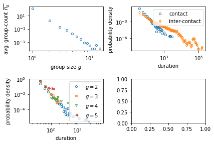

19. Temporal networks libraries#
19.1. Tacoma#
import matplotlib.pyplot as plt
import numpy as np
import tacoma as tc
from tacoma.interactive import visualize
temporal_network = tc.download_and_convert_sociopatterns_hypertext_2009()
visualize(temporal_network, frame_dt = 10);
import tacoma as tc
from tacoma.interactive import visualize
# define temporal network as a list of edge changes
temporal_network = tc.edge_changes()
temporal_network.N = 10
temporal_network.edges_initial = [ (0,1), (2,3), (1,7), (3,5), (1,9), (7,2) ]
temporal_network.t0 = 0.0
temporal_network.t = [ 0.8, 2.4 ]
temporal_network.tmax = 3.1
temporal_network.edges_in = [
[ (0, 5), (3, 6) ],
[ (3, 7), (4, 9), (7, 8) ],
]
temporal_network.edges_out = [
[ (0, 1) ],
[ (2, 3), (3, 6) ],
]
visualize(temporal_network, frame_dt = 0.05)
changing directory to /Users/lordgrilo/.tacoma/web
starting server here ... /Users/lordgrilo/.tacoma/web
preparing network
127.0.0.1 - - [20/May/2022 16:50:13] "GET /?data=tmp_180e1f29783 HTTP/1.1" 200 -
127.0.0.1 - - [20/May/2022 16:50:13] "GET /tmp_180e1f29783_config.json HTTP/1.1" 200 -
127.0.0.1 - - [20/May/2022 16:50:13] "GET /tmp_180e1f29783/tmp_180e1f29783_0.taco HTTP/1.1" 200 -
127.0.0.1 - - [20/May/2022 16:50:13] "GET /tmp_180e1f29783/tmp_180e1f29783_0.json HTTP/1.1" 200 -
stopping server ...
was asked to stop the server
deleted all files
---------------------------------------------------------------------------
KeyboardInterrupt Traceback (most recent call last)
File ~/.virtualenvs/stenv/lib/python3.9/site-packages/tacoma/interactive.py:368, in visualize(temporal_networks, frame_dt, time_normalization_factor, time_unit, titles, config, port, export_path)
367 while True:
--> 368 time.sleep(2)
369 except KeyboardInterrupt:
370 # thread.join()
KeyboardInterrupt:
During handling of the above exception, another exception occurred:
KeyboardInterrupt Traceback (most recent call last)
Input In [45], in <cell line: 20>()
11 temporal_network.edges_in = [
12 [ (0, 5), (3, 6) ],
13 [ (3, 7), (4, 9), (7, 8) ],
14 ]
15 temporal_network.edges_out = [
16 [ (0, 1) ],
17 [ (2, 3), (3, 6) ],
18 ]
---> 20 visualize(temporal_network, frame_dt = 0.05)
File ~/.virtualenvs/stenv/lib/python3.9/site-packages/tacoma/interactive.py:373, in visualize(temporal_networks, frame_dt, time_normalization_factor, time_unit, titles, config, port, export_path)
371 print('stopping server ...')
372 server.stop_this()
--> 373 thread.join()
375 # time.sleep(1)
377 print('changing directory back to', cwd)
File /opt/homebrew/Cellar/python@3.9/3.9.12_1/Frameworks/Python.framework/Versions/3.9/lib/python3.9/threading.py:1053, in Thread.join(self, timeout)
1050 raise RuntimeError("cannot join current thread")
1052 if timeout is None:
-> 1053 self._wait_for_tstate_lock()
1054 else:
1055 # the behavior of a negative timeout isn't documented, but
1056 # historically .join(timeout=x) for x<0 has acted as if timeout=0
1057 self._wait_for_tstate_lock(timeout=max(timeout, 0))
File /opt/homebrew/Cellar/python@3.9/3.9.12_1/Frameworks/Python.framework/Versions/3.9/lib/python3.9/threading.py:1073, in Thread._wait_for_tstate_lock(self, block, timeout)
1070 return
1072 try:
-> 1073 if lock.acquire(block, timeout):
1074 lock.release()
1075 self._stop()
KeyboardInterrupt:
import tacoma as tc
# Structural parameters
N = 100
k = 3
rho = k/(N-1.0)
# Temporal parameters
tau = 4
omega = 1.0/tau
t_run_total = 10
# Simulate
temporal_network = tc.activity_model(N, rho, omega, t_run_total)
# Draw
from tacoma.drawing import edge_activity_plot
import matplotlib.pyplot as pl
edge_activity_plot(temporal_network)
(<Figure size 432x288 with 1 Axes>,
<AxesSubplot:xlabel='time', ylabel='edge id'>)
temporal_network = tc.download_and_convert_sociopatterns_hypertext_2009()
edge_activity_plot(temporal_network)
100% [..............................................................................] 67463 / 67463
(<Figure size 432x288 with 1 Axes>,
<AxesSubplot:xlabel='time', ylabel='edge id'>)
from tacoma.epidemics import simulate_and_measure_i_inf
N = 100
k = 10
omega = 1.6
recovery_rate = 0.1
R0 = 10
t_run_total = 1000
AM = tc.EdgeActivityModel(N,
k/(N-1.),
omega,
t0 = 2000
)
infection_rate = R0 / k * recovery_rate
SIS = tc.SIS(N,t_run_total,infection_rate,recovery_rate,
number_of_initially_infected=N,
sampling_dt=0.0,
)
print(simulate_and_measure_i_inf(AM, SIS,t_equilibrate=900))
(0.8734105907795323, 0.013266475479201883, 9.135279494291652)
from tacoma.analysis import temporal_network_group_analysis
temporal_network_group_analysis(tc.measure_group_sizes_and_durations(temporal_network));
plt.tight_layout()

19.2. Teneto example#
G = np.random.beta(1, 1, [5,5,10])
G
array([[[1.09462638e-01, 2.32660456e-01, 8.85576466e-01, 2.97439117e-01,
9.19689603e-01, 6.37597082e-01, 8.63043532e-01, 4.78466423e-01,
6.83107640e-01, 6.01414841e-02],
[1.14938479e-01, 8.22579204e-01, 8.97003135e-01, 1.96089320e-01,
2.91936894e-01, 3.44885682e-01, 3.84050875e-01, 1.20792340e-02,
8.82667921e-01, 1.61480636e-01],
[9.00333540e-01, 3.71093073e-01, 7.63999774e-01, 2.00814414e-01,
5.87306515e-01, 8.08772020e-01, 8.59592321e-04, 7.12701013e-01,
9.28358518e-01, 3.63305788e-01],
[1.18208004e-01, 4.41450816e-01, 7.29859850e-01, 1.19999964e-01,
3.82990944e-01, 6.36804725e-01, 5.84734280e-01, 8.64296139e-01,
4.07067015e-01, 2.65524985e-01],
[6.07657315e-01, 9.17624200e-01, 1.36736673e-01, 7.91379473e-01,
4.74019739e-01, 3.15016262e-01, 9.07300303e-01, 7.20575051e-01,
5.34644750e-02, 7.08153333e-01]],
[[4.81754677e-01, 1.97816953e-01, 6.88762722e-01, 5.46447529e-02,
9.17968614e-01, 2.86539136e-01, 7.96711509e-01, 4.41140045e-02,
1.97557978e-01, 1.73915994e-01],
[4.59060378e-01, 3.46414986e-01, 1.04555642e-01, 7.92256813e-01,
4.13798680e-01, 6.40601296e-03, 8.56300469e-01, 5.97602236e-01,
7.84190138e-02, 6.41453569e-01],
[7.26457838e-01, 3.25787982e-01, 4.58764588e-01, 1.41705914e-01,
7.34925841e-01, 5.02730869e-01, 1.83780779e-01, 7.17729792e-01,
1.39779037e-01, 5.52534016e-01],
[5.35723705e-01, 4.73321665e-01, 7.98614619e-02, 6.01768104e-03,
7.60886865e-01, 4.44202541e-01, 7.67722498e-01, 4.80437405e-01,
2.57090392e-01, 4.85060477e-01],
[2.09668344e-01, 5.03034208e-01, 1.28434564e-01, 8.22251141e-01,
9.64004860e-01, 5.66099683e-01, 5.08696040e-01, 9.46456107e-01,
6.89602291e-02, 9.99629234e-01]],
[[8.90962635e-02, 8.15204853e-01, 5.30557098e-01, 2.93234262e-01,
5.79712951e-01, 3.89973199e-01, 3.27384720e-01, 8.47366012e-01,
7.96583376e-01, 7.52263710e-01],
[7.37042418e-01, 8.17452144e-01, 1.66575774e-01, 1.71990135e-01,
6.52978045e-01, 7.09754797e-01, 6.38808578e-01, 1.58067615e-01,
4.22148554e-01, 1.66436759e-01],
[2.50024452e-01, 1.76844854e-01, 9.57055274e-02, 5.73330897e-03,
3.32986395e-01, 1.07850683e-01, 9.16372909e-01, 9.25113072e-01,
4.72627465e-01, 7.99114138e-01],
[3.34896049e-01, 7.78045260e-01, 3.40196917e-01, 7.53408819e-02,
3.00435699e-01, 9.73596973e-01, 9.78096301e-01, 6.87870365e-01,
6.98955972e-01, 2.29129255e-01],
[1.87107807e-01, 3.09009125e-01, 3.43719653e-01, 4.02102351e-01,
5.08969038e-01, 8.19714617e-01, 4.62392682e-01, 2.91980429e-01,
3.01935385e-05, 3.35226983e-02]],
[[7.99488101e-01, 4.70765728e-02, 8.10628740e-02, 7.71197389e-01,
8.99321120e-01, 5.66064577e-01, 6.93562004e-01, 1.64364608e-01,
3.22001844e-01, 6.66496697e-01],
[2.97879255e-01, 1.55858382e-01, 4.17568674e-01, 2.43498114e-01,
8.40053478e-01, 9.60631265e-01, 5.85251323e-01, 5.08589108e-02,
1.46570450e-01, 8.77810492e-03],
[8.69621693e-01, 7.42569317e-01, 4.64528596e-01, 9.95083465e-01,
2.46571359e-01, 7.56639044e-01, 3.95051728e-01, 4.40171546e-01,
3.18481825e-01, 4.12332860e-01],
[1.30945938e-01, 3.42307023e-01, 8.92827260e-01, 6.71955665e-01,
5.45587730e-01, 6.10803979e-01, 9.74948987e-01, 6.52736347e-02,
2.05186338e-01, 4.09220894e-01],
[7.98970181e-01, 6.16878816e-01, 8.91440184e-01, 7.47902806e-01,
4.72858283e-01, 3.45176789e-01, 3.45212072e-01, 1.81419859e-01,
3.24394900e-01, 5.01436111e-01]],
[[7.05907470e-01, 6.42459155e-01, 6.57181645e-02, 3.31569479e-01,
8.38057179e-01, 9.58225411e-01, 7.95909475e-01, 8.99374645e-01,
2.51245360e-01, 9.40907590e-01],
[9.21570865e-01, 1.96121905e-01, 6.46443580e-01, 1.68170124e-01,
8.67619146e-01, 4.08816537e-01, 9.08067486e-01, 1.11632504e-01,
6.15807516e-01, 9.89572785e-01],
[7.38919284e-01, 9.90403106e-01, 1.01689060e-02, 8.03516333e-01,
9.83881579e-01, 5.60224479e-01, 6.59064278e-01, 8.85253307e-01,
5.80438151e-01, 1.22614508e-01],
[1.39963001e-01, 6.44714096e-01, 4.47088770e-01, 2.80098585e-01,
2.93072979e-01, 4.34742703e-01, 5.35310322e-01, 8.24789084e-01,
2.67420908e-01, 2.16477482e-01],
[2.20320588e-01, 9.72083355e-02, 3.50681369e-01, 4.08338979e-01,
5.61696526e-02, 5.80623602e-01, 2.56675049e-01, 6.14024560e-01,
4.89346846e-01, 7.64670006e-01]]])
G[G<0.8] = 0
G[G>0.8] = 1
from teneto import TemporalNetwork
tnet = TemporalNetwork(from_array=G, nettype='bu', diagonal=True)
tnet.plot('slice_plot', cmap='Set2')
<AxesSubplot:xlabel='Time'>
import teneto as te
G_periodic = np.zeros([5, 5, 20])
ts_periodic = np.arange(0, 20, 2)
G_periodic[:,:,ts_periodic] = 1
G_periodic = TemporalNetwork(from_array=G_periodic, nettype='bu')
# G_periodic = TemporalNetwork(from_array=G_periodic)
fig = plt.figure(figsize=(20,3))
ax = plt.subplot(111)
G_periodic.plot('slice_plot', ax=ax)
<AxesSubplot:xlabel='Time'>
ts_bursty = [1, 3 ,4, 8, 9, 10, 11, 14, 18, 19]
G_bursty = np.zeros([5, 5, 20])
G_bursty[:,:,ts_bursty] = 1
G_bursty = TemporalNetwork(from_array=G_bursty, nettype='bu')
fig = plt.figure(figsize=(20,3))
ax = plt.subplot(111)
G_bursty.plot('slice_plot', ax=ax)
<AxesSubplot:xlabel='Time'>
ts_bursty = np.random.choice(list(range(20)), size=len(ts_bursty), replace=False)
G_bursty2 = np.zeros([5, 5, 20])
G_bursty2[:,:,ts_bursty] = 1
G_bursty2 = TemporalNetwork(from_array=G_bursty2, nettype='bu')
fig = plt.figure(figsize=(20,3))
ax = plt.subplot(111)
G_bursty2.plot('slice_plot', ax=ax)
<AxesSubplot:xlabel='Time'>
print(te.networkmeasures.reachability_latency(G_bursty))
print(te.networkmeasures.reachability_latency(G_bursty2))
1.85
2.55
print(te.networkmeasures.temporal_efficiency(G_bursty))
print(te.networkmeasures.temporal_efficiency(G_bursty2))
0.5405405405405405
0.3921568627450981
19.3. Generation of random network#
fig = plt.figure(figsize=(20,4))
ax = plt.subplot(111)
g = TemporalNetwork(from_array=te.generatenetwork.rand_poisson(10, 40, lam=.8))
g.plot('slice_plot', ax=ax)
<AxesSubplot:xlabel='Time'>